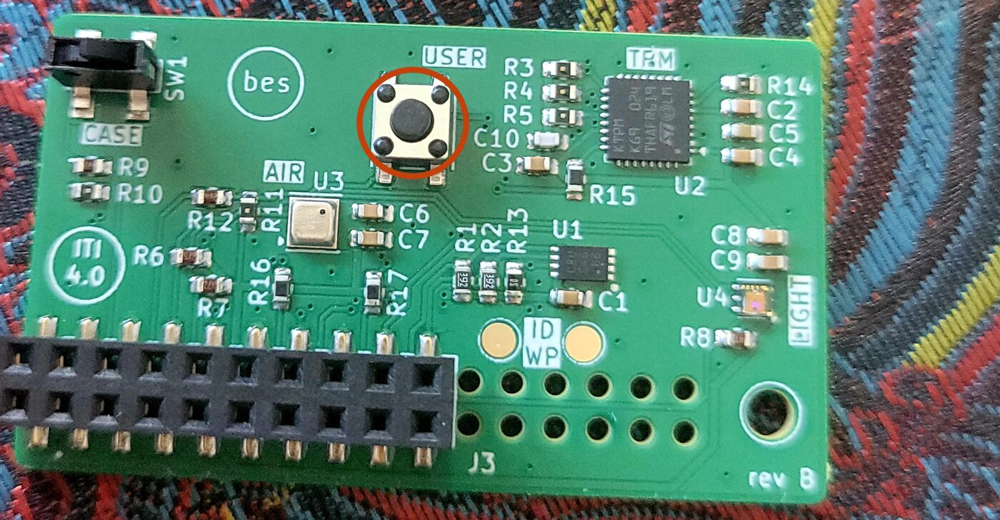
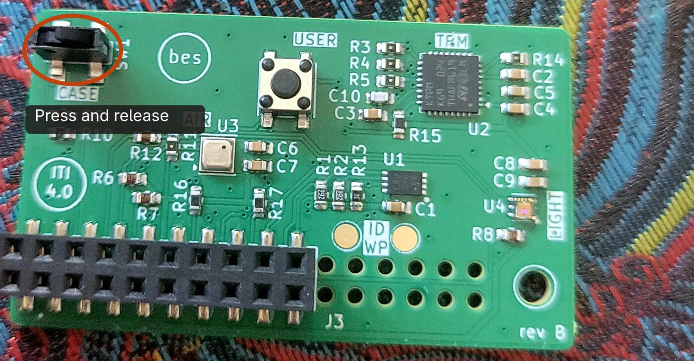
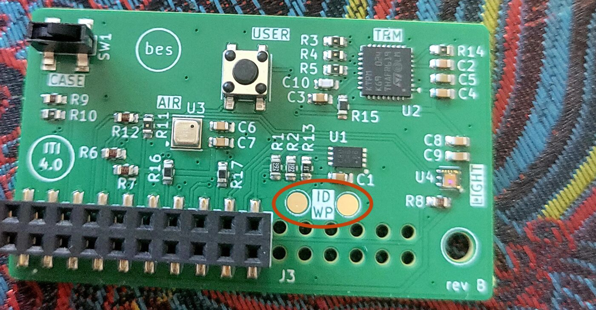

Provision an Iti
- 1Press USER
- 2Find Iti
- 3Provision
Press USER on the Iti
Only Itis whose button was just pressed show up.

USER is the button at the top, next to the TPM chip.
Press USER on the Iti
Only Itis whose button was just pressed show up.

USER is the button at the top, next to the TPM chip.
Connected
Choose what to do
An Iti that's already set up only needs some of these.
K7QXCode ending K7QX
USER pressed
Press and release CASE

CASE is the lever in the corner. Push it in, then let it spring back.
You can close this page. Press USER to check back.
Code ending K7QX · Tamanu Iti v4.0
Bridge the ID WP pads
Hold tweezers or a screwdriver across both pads until the Iti says to let go.

The two round pads marked ID WP, beside the header.
You can close this page. Press USER to check back.
Code ending K7QX · Tamanu Iti v4.0
Writing 4.1 of 9.8 GB. About 3 minutes left.
You can close this page. Press USER to check back.
Code ending K7QX · Tamanu Iti v4.0
You can close this page. Press USER to check back.
Provisioned
K7QX is ready
Power it off and remove the SD card.
Also saved to the SD card.